不要让离开武汉的人再次绝望丨单读征文
原文链接 备份链接 这段时间，除了关于疫情本身的讨论，一些新的话题不断加入。单读征文今天的来信，来自一位选择离开家乡的武汉人。武汉人在外省的处境令人堪忧，从直面病毒的恐慌，到遭遇歧视的愤懑，武汉人不仅是这场疫情中最直接的受害者，还成为后续 …
2020年1月29日。
农历正月初五。
武汉封城第七天。
天门封城第六天。
被你骂天天记流水账——好，今天就不写了。好歹也算个摄影搏主，这么久不更图，一点粉都快掉光咯！
大过年的，团团圆圆，不都得拍个全家福不是，可撞到今年这种灾年，多少家破人亡的剧情正上演，多少争分夺秒的战斗在打响，多少流落异乡的游子被隔离…相比他们，我们一家虽连门都不能出，却仍安乐无虞，实乃天佑。每逢过年，都是我在记录，起先纯粹是随手拍，慢慢开始主动记录，从爹爹婆婆，到新加入的晚辈——这一翻老照片，都十年了。我曾在拍我表弟的那篇中写过，我说，我对你们的爱，都在那一咔嚓之间。
今年，你们家拍全家福了吗？
**2010年
**

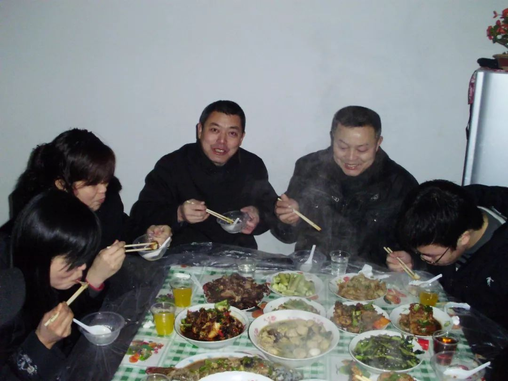
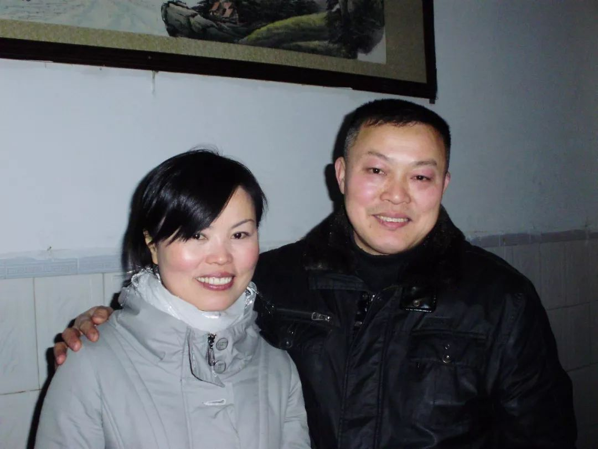
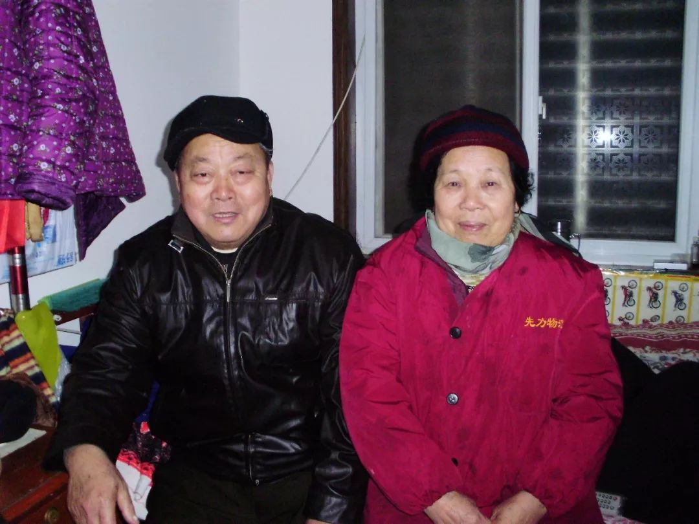

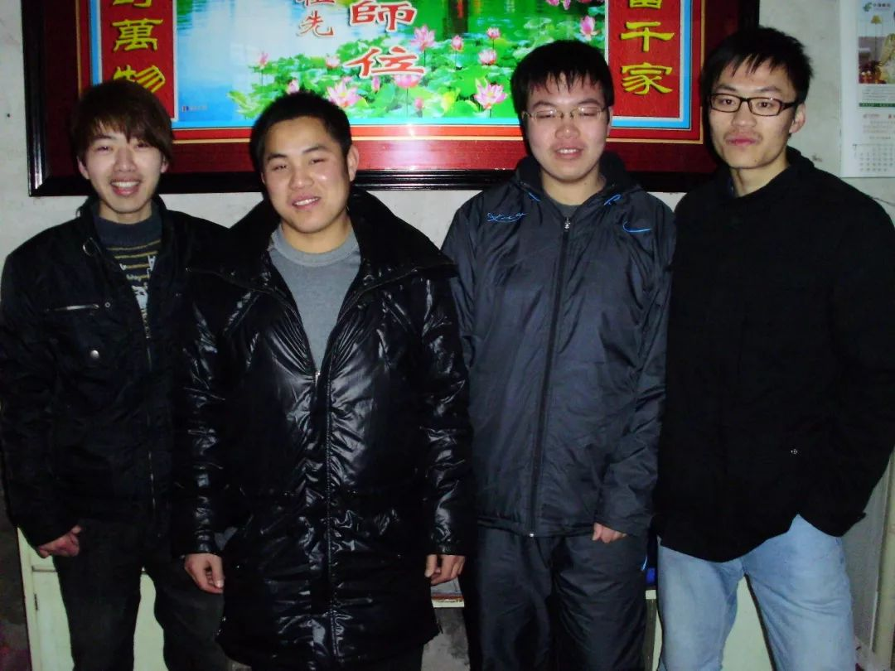
**2011
**


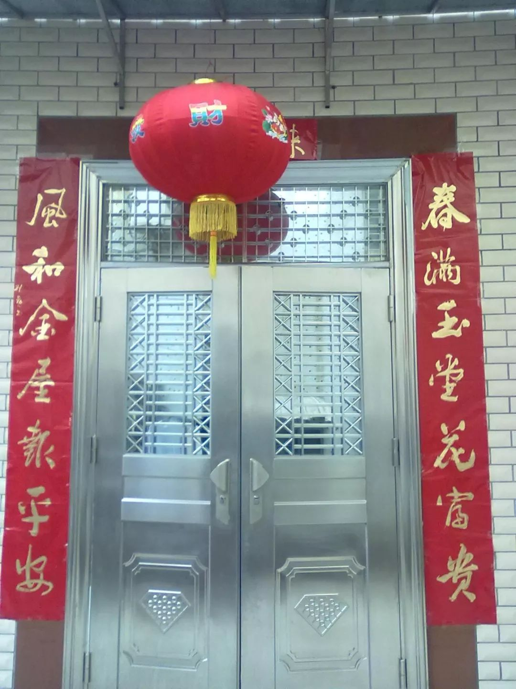

**2012
**


2013


2014
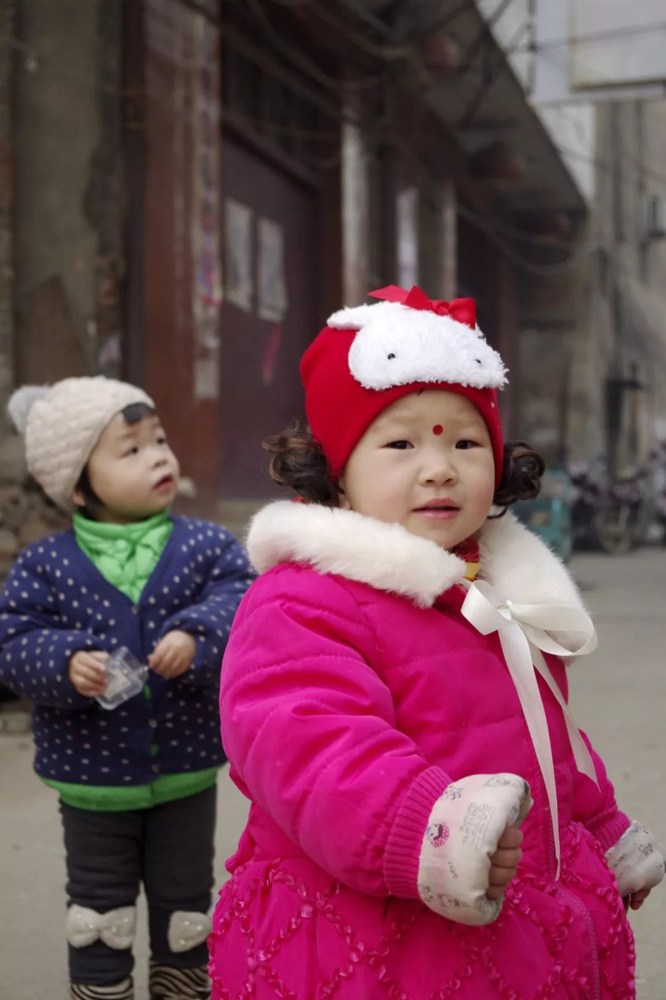


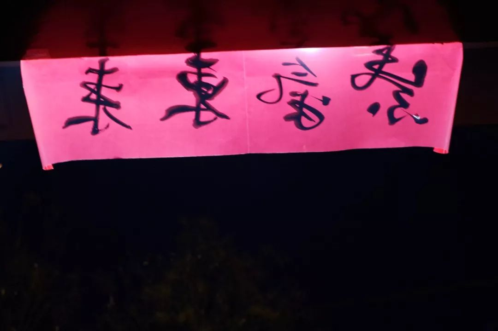

2015
（状态有点懵逼）
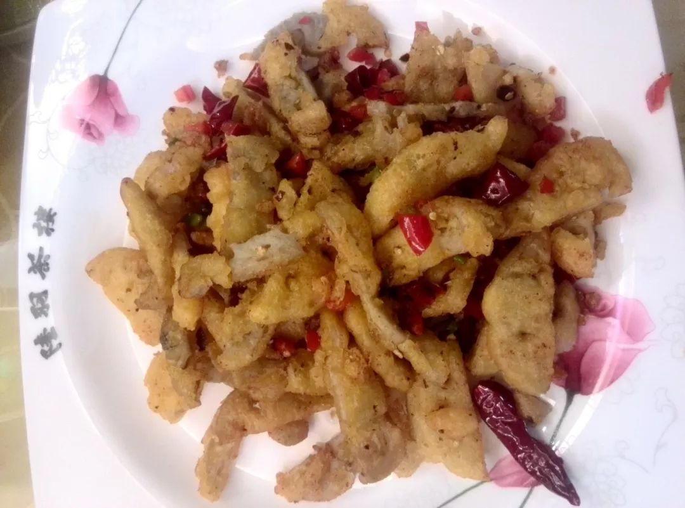


2016


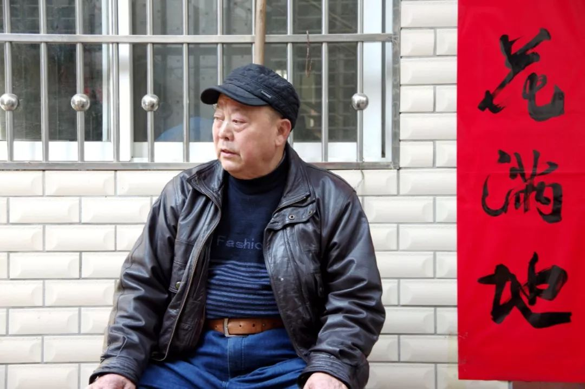

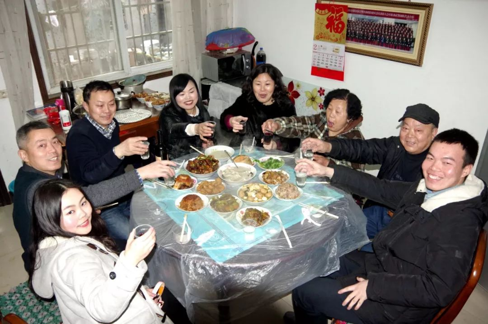
2017
（可能在梦游吧）
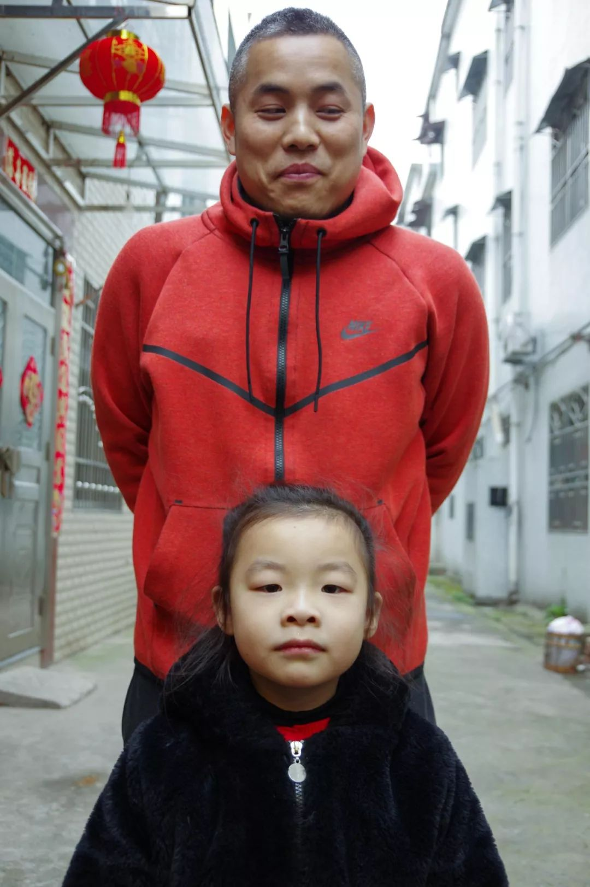


2018


2019

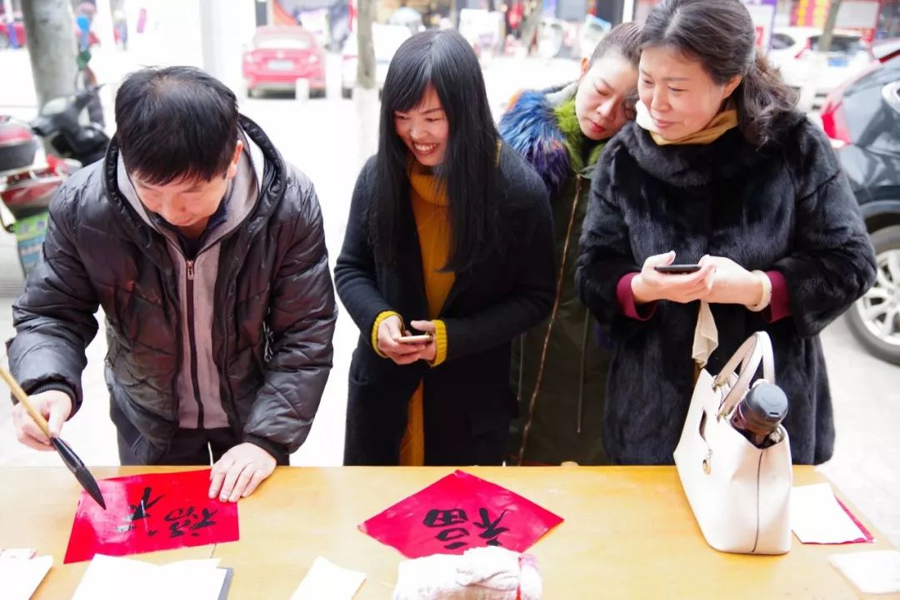


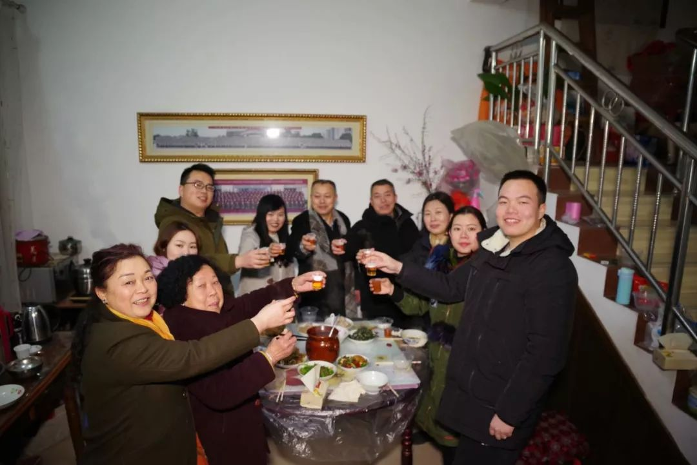

**2020
**


原文链接 备份链接 这段时间，除了关于疫情本身的讨论，一些新的话题不断加入。单读征文今天的来信，来自一位选择离开家乡的武汉人。武汉人在外省的处境令人堪忧，从直面病毒的恐慌，到遭遇歧视的愤懑，武汉人不仅是这场疫情中最直接的受害者，还成为后续 …
原文链接 备份链接 数据来源：新浪武汉肺炎疫情实时追踪 截至1月29日7时， 全国新型肺炎个案确诊5515例， 目前患者数字仍呈现上升趋势。 （画面来源：林晨同学Hearing） 武汉成为全球新闻的焦点。 和许多医护人员一样， 各大媒 …
原文链接 备份链接 “ 弟弟上夜班，一上就是十二个小时，每天的口罩需求量大，一天要生产几十万只。 1月23号，在武汉宣布封城后不久，黄冈也宣布在1月24号零点封城。这座紧挨着武汉的城市，有750万人口，从前它以“黄冈密卷”闻名，这次却也遭 …
原文链接 备份链接 作者 | 谈骁 (武汉诗人，春节自我隔离在潜江小镇。) 编辑：康晓 出品｜深网·腾讯小满工作室 欢迎下载腾讯新闻APP，阅读更多优质资讯 编者按：通过湖北各城普通民众的视角和抗疫日记，记录这一段我们永不会忘记的历史。封 …
原文链接 备份链接 武汉封城、公共交通全部关停以后，陈述杰和几个朋友一起召集起一支4000多人的爱心车队，为武汉市的医务工作者们提供后援支持。直到1月25号，团队里已知至少三人出现发热，公益接送医生行动暂时停止，他们仍然在帮忙运输医疗物 …